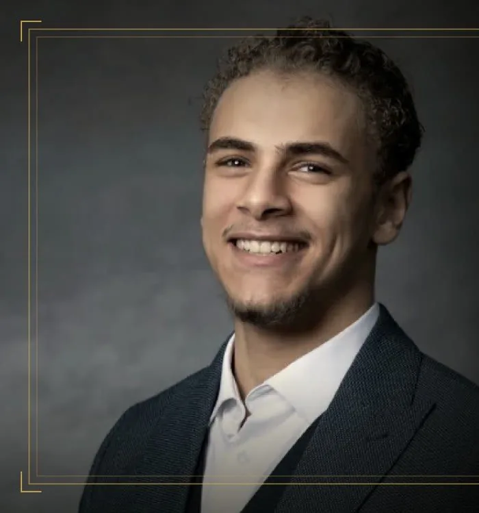

Yusuf Gadelrab
Athletic & commercial model — San Jose / Bay Area. Student-athlete build with a documented 260→200 lb transformation, comfortable on camera every day.
Digitals
Fresh digitals available on request — new sets shot within 48 hours for any brief.
Measurements
| Height | 5'10" (178 cm) |
|---|---|
| Weight | 200 lb (91 kg) — athletic |
| Chest | 40" |
| Shoulders | 22" |
| Neck | 16" |
| Hips | 39" |
| Arm | 15.5" |
| Shoe (US) | 10.5 |
| Hair | Black |
| Eyes | Brown |
| Age | 20 |
About
Former football team captain (league MVP) and wrestler, now a computer-science student at San Jose State. I cut from 260 lb to 200 lb while adding muscle and documented every step on camera — so the physique in the photos is the physique that shows up on set.
I bring an athlete's discipline to shoots: on time, coachable, unlimited takes, zero ego. My content home base is Instagram (@_kxng_sef), currently at 650,000+ views in the last 30 days — brands get both the model and the reach.
Open To
- Fitness & athletic-wear campaigns — the natural fit
- Commercial / lifestyle and campus-brand work
- Grooming & men's-care product shoots
- Product collaborations and gifted-product tests
- TFP with photographers building portfolios — selective, Bay Area
Creator campaigns with deliverables and reach? That's the media kit — packages, audience stats, and booking in one page. On-camera work (student films, indie shorts, hosting) lives on the acting page.
Book Me
One email, a reply within 24 hours, no agency in between.